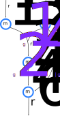

Parametric constraint-based metabolic models
import DifferentiableMetabolism as D
import FastDifferentiation as F
const Ex = F.Node
import ConstraintTrees as C
import COBREXA as X
import Tulip as T
import Clarabel as QLoad and solve a simple model
Load a small test model
include("../../test/simple_model.jl");
modelAbstractFBCModels.CanonicalModel.Model(
reactions = Dict{String, AbstractFBCModels.CanonicalModel.Reaction}("r1" => A…
metabolites = Dict{String, AbstractFBCModels.CanonicalModel.Metabolite}("m3" …
genes = Dict{String, AbstractFBCModels.CanonicalModel.Gene}("g4" => AbstractF…
couplings = Dict{String, AbstractFBCModels.CanonicalModel.Coupling}(),
)
Build a basic ConstraintTree model without parameters
m = X.flux_balance_constraints(model)ConstraintTrees.ConstraintTree with 4 elements:
:coupling => ConstraintTrees.ConstraintTree(#= 0 elements =#)
:flux_stoichiometry => ConstraintTrees.ConstraintTree(#= 4 elements =#)
:fluxes => ConstraintTrees.ConstraintTree(#= 6 elements =#)
:objective => ConstraintTrees.Constraint(ConstraintTrees.LinearValue…Solve normally
base_model = X.optimized_values(m; optimizer = T.Optimizer, objective = m.objective.value)
base_model.fluxesConstraintTrees.Tree{Float64} with 6 elements:
:r1 => -1.97554
:r2 => -1.0
:r3 => 1.97554
:r4 => 1.97554
:r5 => -0.97554
:r6 => 1.0Add parameters to the model
Make bound of r2 and mass balance of m3 parameters
F.@variables r2bound m3bound
m.fluxes.r2 = C.Constraint(m.fluxes.r2.value, C.BetweenT(-2 * r2bound, Ex(0)))
m.flux_stoichiometry.m3 =
C.Constraint(m.flux_stoichiometry.m3.value, C.EqualToT(m3bound) / 2)ConstraintTrees.Constraint(ConstraintTrees.LinearValue([3, 4], [1.0, -1.0]), ConstraintTrees.EqualToT{FastDifferentiation.Node}((m3bound / 2)))Note, ConstraintTrees.jl exports Between and EqualTo which are specialized to Float64. To use parameters as shown here, you must use the more general types BetweenT and EqualToT. Appropriate overloads have been added to simplify type promotion when adding floaty bounds to symbolic bounds.
Add parametric constraints
p = F.make_variables(:p, 4)
m *=
:linparam^C.Constraint(
value = p[1] * m.fluxes.r1.value + p[2] * m.fluxes.r2.value,
bound = C.BetweenT(-p[3], Ex(0)),
)ConstraintTrees.ConstraintTree with 5 elements:
:coupling => ConstraintTrees.ConstraintTree(#= 0 elements =#)
:flux_stoichiometry => ConstraintTrees.ConstraintTree(#= 4 elements =#)
:fluxes => ConstraintTrees.ConstraintTree(#= 6 elements =#)
:linparam => ConstraintTrees.Constraint(ConstraintTrees.LinearValue…
:objective => ConstraintTrees.Constraint(ConstraintTrees.LinearValue…Note, ConstraintTrees.jl exports LinearValue and QuadraticValue which are specialized to Float64. To use parameters as shown here, you must use the more general types LinearValueT and QuadraticValueT. Appropriate overloads have been added to simplify type construction and promotion (as used above). But note that m.linparam.value is a ConstraintTrees.LinearValueT{FastDifferentiation.Node}.
Substitute parameters into model to yield a "normal" constraint tree model
parameter_substitutions = Dict(
:r2bound => 4.0,
:m3bound => 0.1, # lose some mass here
:p1 => 1.0,
:p2 => 1.0,
:p3 => 4.0,
)
m_substituted = D.substitute(m, k -> parameter_substitutions[k])ConstraintTrees.ConstraintTree with 5 elements:
:coupling => ConstraintTrees.ConstraintTree(#= 0 elements =#)
:flux_stoichiometry => ConstraintTrees.ConstraintTree(#= 4 elements =#)
:fluxes => ConstraintTrees.ConstraintTree(#= 6 elements =#)
:linparam => ConstraintTrees.Constraint(ConstraintTrees.LinearValue…
:objective => ConstraintTrees.Constraint(ConstraintTrees.LinearValue…This can be solved like any constraint tree
m_normal = X.optimized_values(
m_substituted,
objective = m.objective.value,
optimizer = T.Optimizer,
)ConstraintTrees.Tree{Float64} with 5 elements:
:coupling => ConstraintTrees.Tree{Float64}(#= 0 elements =#)
:flux_stoichiometry => ConstraintTrees.Tree{Float64}(#= 4 elements =#)
:fluxes => ConstraintTrees.Tree{Float64}(#= 6 elements =#)
:linparam => -4.0
:objective => 3.9Alternatively, a convenience function can take care of the substitutions for you
m_noparams = D.optimized_values(
m,
parameter_substitutions;
objective = m.objective.value,
optimizer = T.Optimizer,
)(tree = ConstraintTrees.Tree{Float64}(#= 5 elements =#), primal_values = [-0.05000000004142691, -3.949999999938189, 0.050000000041529165, 4.163417560663754e-11, 3.8999999998967194, 3.8999999999384105], equality_dual_values = [0.9999999997705327, 1.0000000000047113, 1.9999999997136721, 1.000000000004724], inequality_dual_values = [-1.0576241106342151e-11, -4.7333135159142394e-12, -6.157648023600636e-11, -0.9999999997089498, -1.89236393841278e-14, -4.782686623610932e-12, -1.0000000000048568, -2.4489565913717334e-10, -4.882271202202376e-12, -1.9128431302249312e-14, -1.939884735222353e-14, -1.9494739251965798e-14, -1.9453667399759348e-14, 0.0])Change the parameters and re-solve
Substitute parameters into model
parameter_substitutions[:m3bound] = 0.0
m_noparams2 = D.optimized_values(
m,
parameter_substitutions;
objective = m.objective.value,
optimizer = T.Optimizer,
)
m_noparams2.tree.fluxesConstraintTrees.Tree{Float64} with 6 elements:
:r1 => -6.42382e-10
:r2 => -4.0
:r3 => 6.43725e-10
:r4 => 6.45009e-10
:r5 => 4.0
:r6 => 4.0Quadratic parameters also work
q = F.make_variables(:q, 6)
m.objective = C.Constraint(
value = sum(
rxn.value * rxn.value * qi for (qi, rxn) in zip(collect(q), values(m.fluxes))
),
bound = nothing,
)
m *= :objective_bound^C.Constraint(value = m.fluxes.r6.value, bound = 2.0)
parameter_substitutions =
merge(parameter_substitutions, Dict(v.node_value => 1.0 for v in q))
m_noparams3 = D.optimized_values(
m,
parameter_substitutions;
objective = m.objective.value,
optimizer = Q.Optimizer,
sense = X.Minimal,
)
m_noparams3.tree.fluxesConstraintTrees.Tree{Float64} with 6 elements:
:r1 => -0.5
:r2 => -2.0
:r3 => 0.5
:r4 => 0.5
:r5 => 1.5
:r6 => 2.0This page was generated using Literate.jl.